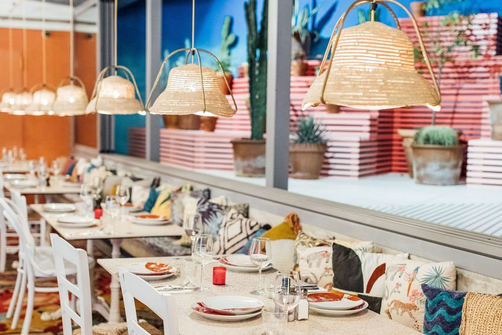
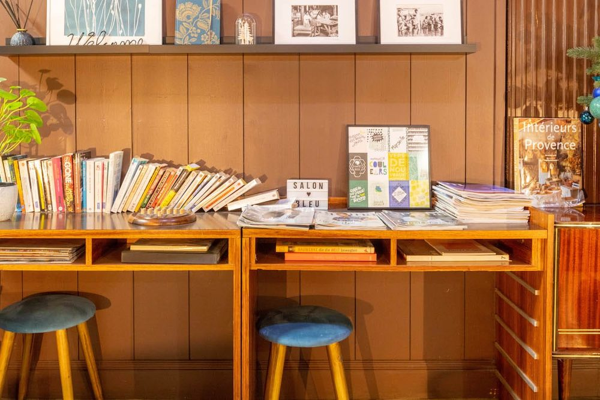
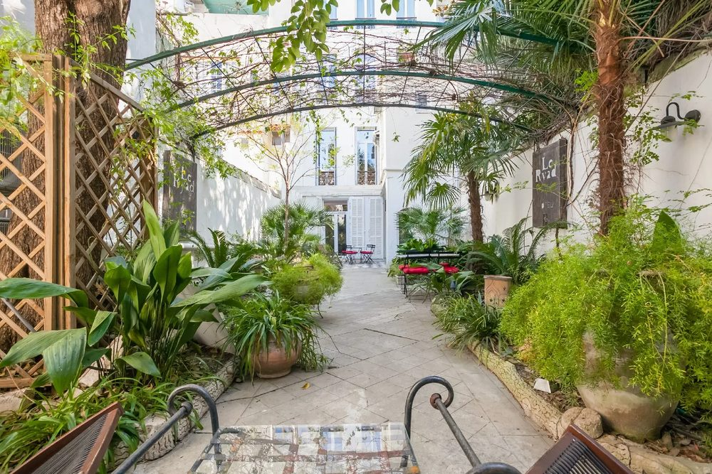
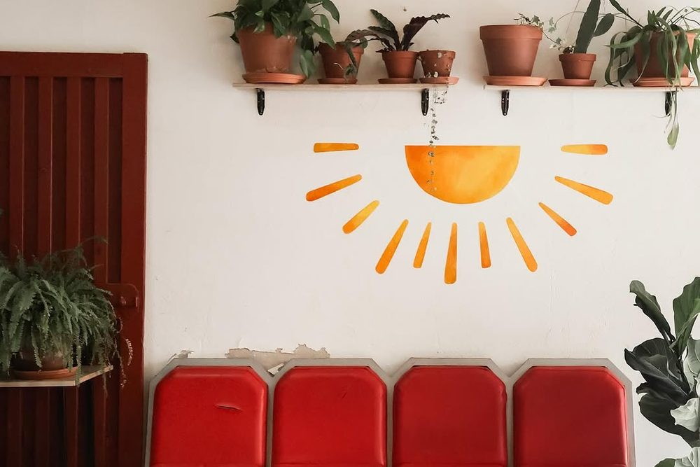
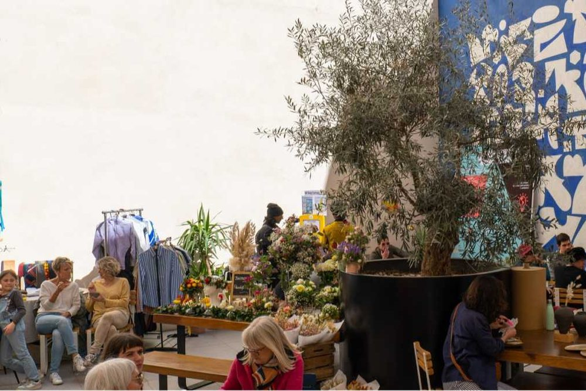
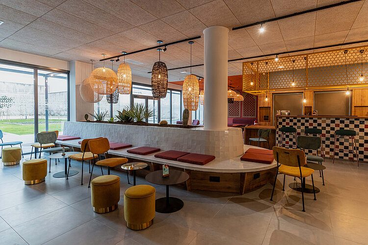

Pas besoin de dormir au Cours Ju pour en profiter. Le quartier compte peu d’hôtels, mais il est à quelques minutes à pied ou en métro de Noailles, du Vieux-Port, du Panier et de la gare Saint-Charles, où l’offre est large. Voici six adresses, choisies pour leur accès facile au quartier.
Dans
le quartier
Un seul grand hôtel se trouve vraiment dans le quartier, entre La Plaine et la place Notre-Dame-du-Mont. On y descend à pied le soir, on en remonte à pied la nuit.

Mama Shelter Marseille
Le plus proche du Cours Julien, à cinq minutes à pied. Chambres design, restaurant, bar et rooftop.
Deux hôtels
de charme
Deux petites maisons, loin des chaînes, chacune à un quart d’heure de marche du Cours Julien.

Hôtel Edmond Rostand
Un trois-étoiles de charme entre la rue de Rome et la Préfecture, avec son café au rez-de-chaussée. Le Cours Julien est à un quart d’heure à pied.

Le Ryad
Un petit boutique-hôtel inspiré des maisons marocaines, avec un jardin intérieur où l’on prend le petit déjeuner. Dix minutes à pied du Cours Julien, par Noailles.
Auberges
de jeunesse
Dortoirs, cuisine partagée, bar et rencontres : trois auberges récentes, au Vieux-Port, au Panier et à la Joliette. Toutes sont à un trajet de métro ou une petite marche du quartier.

Vertigo Hostel Marseille
À deux cents mètres du Vieux-Port, des dortoirs climatisés avec salle de bain, une cuisine partagée et un bar dans une cave voûtée. Une vingtaine de minutes à pied du Cours Julien.

The People Marseille
Une grande auberge entre tradition et street art, à quelques minutes du Panier, du Vieux-Port et de la gare. Dortoirs et chambres privées, bar et restaurant.

Meininger Marseille Centre La Joliette
Entre l’hôtel et l’auberge : dortoirs et chambres privées, grand salon, cuisine partagée. La station Joliette est sur la ligne 2 : le Cours Julien est direct, en quelques stations.
Quel quartier
choisir ?
Notre-Dame-du-Mont, Castellane
Pour rentrer à pied après un concert. Le 6ᵉ arrondissement est central, plus calme que le Vieux-Port le soir.
Noailles, la Canebière
Au pied du quartier, à dix minutes de marche. Animé le jour, plus bruyant la nuit.
Le Vieux-Port, le Panier
Pour la mer et les ruelles. Comptez vingt minutes à pied, ou le métro.
Saint-Charles, la Joliette
Pratique en arrivant en train ou en ferry : la ligne 2 du métro mène directement à la station Notre-Dame-du-Mont – Cours Julien.
Et pour arriver au quartier, métro, tram, bus ou escaliers : tout est dans notre page Venir au Cours Ju.
Où dormir près du Cours Julien ?
Le Mama Shelter, rue de la Loubière, est à cinq minutes à pied. L’Hôtel Edmond Rostand (6ᵉ) et Le Ryad (1ᵉʳ) sont à un quart d’heure. Les auberges Vertigo, The People et Meininger sont au Vieux-Port, au Panier et à la Joliette.
Y a-t-il une auberge de jeunesse près du Cours Julien ?
Pas dans le quartier même. Les plus proches sont Vertigo, près du Vieux-Port, et The People, près du Panier. Meininger, à la Joliette, est sur la ligne 2 du métro, directe jusqu’au Cours Julien.
Quel quartier choisir pour dormir à Marseille et sortir au Cours Julien ?
Le 6ᵉ arrondissement (Notre-Dame-du-Mont, Castellane) pour tout faire à pied, Noailles et la Canebière pour être au centre, ou un hébergement près d’une station de la ligne 2 du métro.
Sources : les sites des établissements et l’Office de tourisme de Marseille. Prix indicatifs relevés en octobre 2026, à vérifier avant de réserver. Cette liste n’est pas sponsorisée.
Photos : Mama Shelter, Hôtel Edmond Rostand, Le Ryad, Vertigo Hostel Marseille, The People, Meininger Hotels.